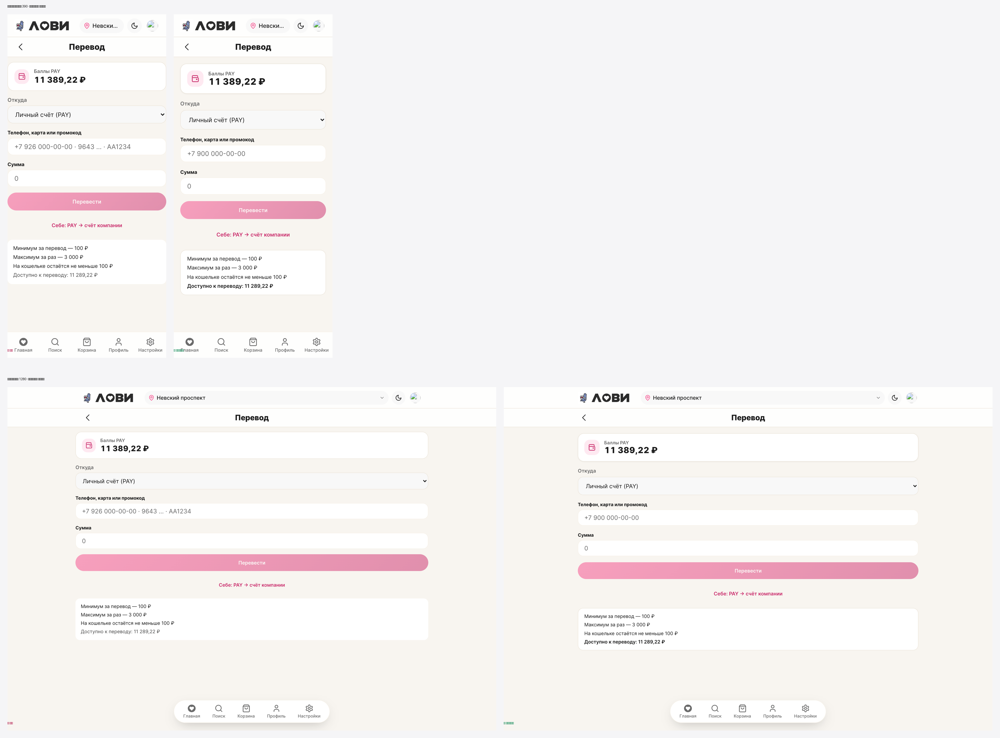

Экран /profile/wallet/transfer: убрано «прилипание» контента к краям, отступы и типографика переведены на токены канона, попутно найден и исправлен дефект стража дизайн-системы.
Экран лежал внутри контейнера, который даёт только максимальную ширину и центрирование, но не даёт боковых отступов. Из-за этого карточка баланса, поля и блок правил упирались в кромку экрана. Внутри стилей 40 значений отступов и размеров шрифта были проставлены «голыми» пикселями в обход системы.
| Область | Было | Стало |
|---|---|---|
| Боковой отступ | нет — контент к краям | var(--lv-pad-x) = 16px на контейнере |
| Ритм между блоками | 14px литералом | var(--lv-block-gap) = 16px |
| Нижний отступ экрана | 32px литералом | var(--lv-section-gap) = 24px |
| Микро-ритм (иконка↔текст и т.п.) | 4–12px литералами | производные от --lv-block-gap (¼, ½, ¾) |
| Типографика | font-size: 12px … (голые px) | calc(var(--font-scale,1) * Npx) |
| Поля/отступы карточек | 14/16px литералами | токены + var(--lv-pad-x) |
| Подсказка поля получателя | перегруженный плейсхолдер, обрезался | короткий +7 900 000-00-00 |

Правило font-size-literal (и font-family-literal) было записано с инвертированным условием: нарушением считалось как раз использование канонного токена, а «голые» пиксели — пропускались. То есть страж наказывал правильный код и не видел неправильный.
| Доказательство | Значение |
|---|---|
Файл scss/variables.scss (целиком на calc(var(--font-scale…))) | числился как 24 нарушения |
| Метрика font-size в baseline до правки | 71 (мерила не то) |
| Метрика font-size в baseline после правки | 295 (реальный долг) |
| Метрика font-family | 12 → 1 |
Полярность исправлена, baseline пересчитан. нужно решение владельца — правка трогает Фазу Б (усиление стража) и меняет счётчик долга, поэтому не коммичена.